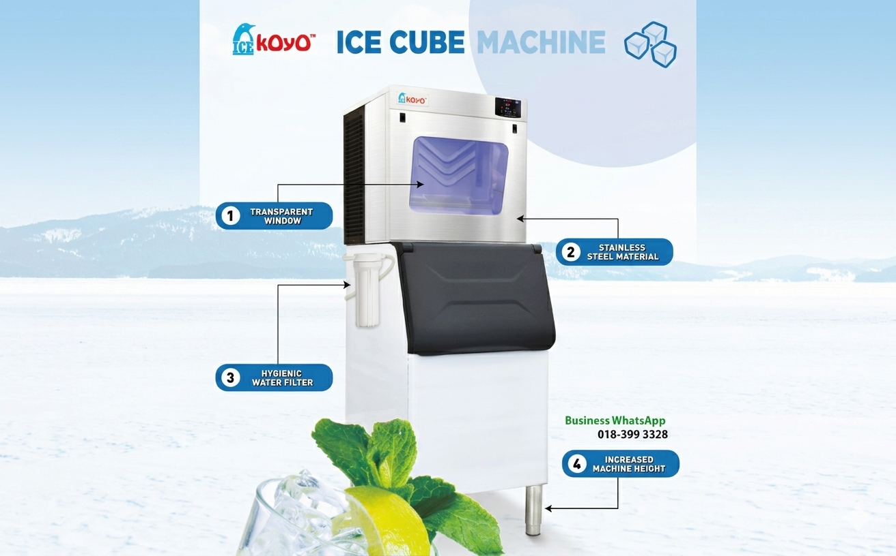
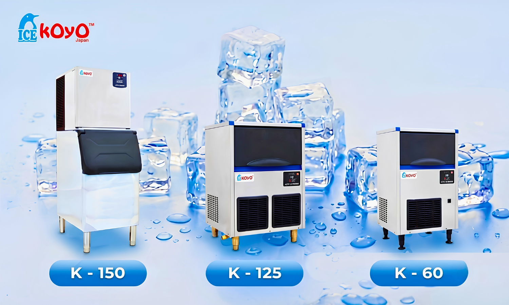

For investors exploring multi-outlet growth within the F&B Industry Malaysia, scalability depends heavily on hardware predictability. Achieving smooth, duplicable workflows across multiple locations requires ultra-reliable kitchen assets. This focus on replicable operational blueprints makes Franchise Expo Malaysia 2026 at the Kuala Lumpur Convention Centre a vital business event this July. KOYO CORPORATE (M) SDN BHD will be showcasing their flagship asset systems, focusing heavily on how the standard Koyo Ice Maker Machine serves as a reliable operational foundation.
In the franchise world, brand reputation rests on serving identical product profiles at every location. Relying on a uniform solution from the commercial ice machine Malaysia market ensures standardized ice clarity across all corporate branches, protecting flavor accuracy while keeping commercial equipment maintenance plans completely streamlined and predictable.

Koyo Corporate’s selection allows franchise chains to specify the ideal machinery footprint matching their target branch layouts:
As utility configurations scale across multi-outlet operations, power and water consumption become significant budget items. Koyo’s advanced design incorporates smart saving frameworks that limit waste during extraction cycles. These specialized eco-friendly ice making solutions safeguard franchise profit margins, helping corporate networks meet modern sustainability targets without sacrificing ice production volumes.
Franchise Insight: Successful networks select equipment partners based on support network speed. Integrating a reliable Koyo Ice Maker Machine protects your brand's daily beverage consistency across the entire F&B Industry Malaysia landscape.
Building a resilient hospitality brand requires choosing dependable equipment assets from day one. Connect with the technical team from KOYO CORPORATE (M) SDN BHD during Franchise Expo Malaysia 2026 at KLCC to see how our premium line can protect your business's bottom line as you scale.